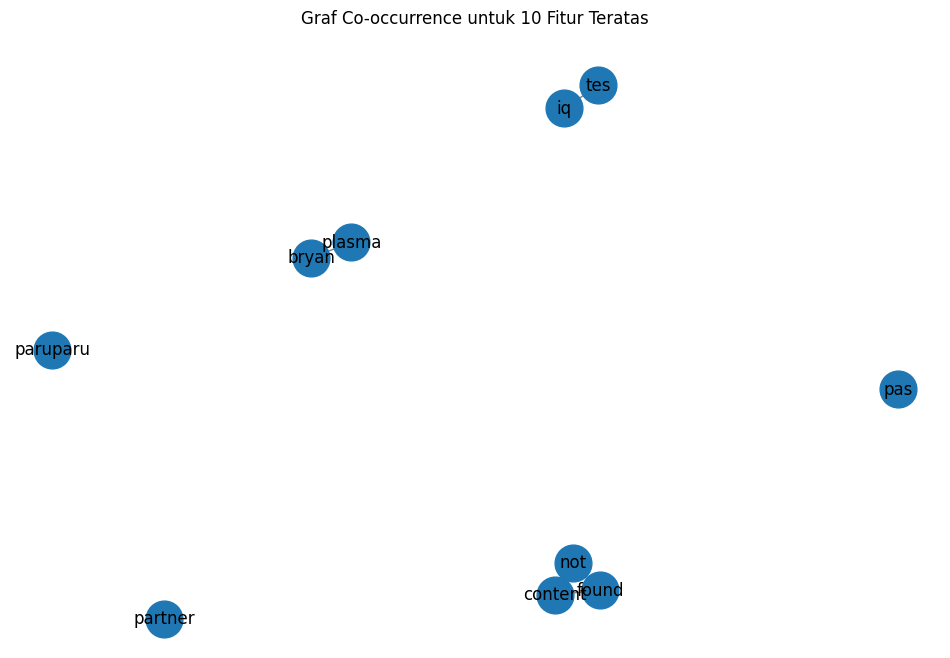
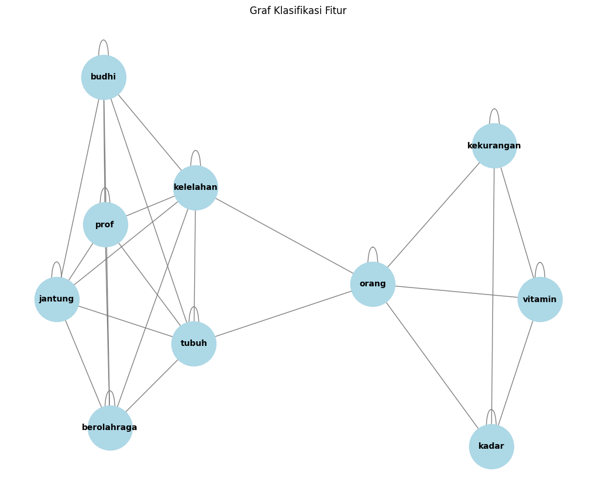

Tugas 4#
from google.colab import drive
drive.mount('/content/drive')
Drive already mounted at /content/drive; to attempt to forcibly remount, call drive.mount("/content/drive", force_remount=True).
import pandas as pd
df = pd.read_csv("/content/drive/My Drive/ppw/report/tugas-ppw/hasil_prepros.csv")
df.head()
| judul | tanggal | isi | kategori | cleansing | case_folding | tokenize | stopword_removal | |
|---|---|---|---|---|---|---|---|---|
| 0 | Awal Mula J&J Digugat Rp 233 Miliar Buntut Kas... | Rabu, 16 Okt 2024 15:03 WIB | Jakarta - Seorang pria bernama Evan Plotkin di... | Kesehatan | Jakarta Seorang pria bernama Evan Plotkin di ... | jakarta seorang pria bernama evan plotkin di ... | ['jakarta', 'seorang', 'pria', 'bernama', 'eva... | jakarta pria bernama evan plotkin connecticut ... |
| 1 | XLIFE Hadirkan Jasa Terapis Pijat Profesional ... | Rabu, 16 Okt 2024 14:32 WIB | Jakarta - Manfaat dari terapi pijat selain rel... | Kesehatan | Jakarta Manfaat dari terapi pijat selain rela... | jakarta manfaat dari terapi pijat selain rela... | ['jakarta', 'manfaat', 'dari', 'terapi', 'pija... | jakarta manfaat terapi pijat relaksasi menghil... |
| 2 | Eks PM Malaysia Mahathir Mohamad Masuk RS, Sak... | Rabu, 16 Okt 2024 14:31 WIB | Jakarta - Mantan Perdana Menteri Malaysia Tun ... | Kesehatan | Jakarta Mantan Perdana Menteri Malaysia Tun D... | jakarta mantan perdana menteri malaysia tun d... | ['jakarta', 'mantan', 'perdana', 'menteri', 'm... | jakarta mantan perdana menteri malaysia tun dr... |
| 3 | Aksi Nyeleneh Ritual Miliarder AS Ganti Plasma... | Rabu, 16 Okt 2024 14:01 WIB | Jakarta - Miliarder Amerika Serikat, Bryan Joh... | Kesehatan | Jakarta Miliarder Amerika Serikat Bryan Johns... | jakarta miliarder amerika serikat bryan johns... | ['jakarta', 'miliarder', 'amerika', 'serikat',... | jakarta miliarder amerika serikat bryan johnso... |
| 4 | Uji Klinis di RI Makin Turun Tiap Tahun, Kalah... | Rabu, 16 Okt 2024 13:30 WIB | Jakarta - Dirjen Kefarmasian dan Alat Kesehata... | Kesehatan | Jakarta Dirjen Kefarmasian dan Alat Kesehatan... | jakarta dirjen kefarmasian dan alat kesehatan... | ['jakarta', 'dirjen', 'kefarmasian', 'dan', 'a... | jakarta dirjen kefarmasian alat kesehatan keme... |
from sklearn.preprocessing import LabelEncoder
# Transformasi data kategorik
label_encoder = LabelEncoder()
df.loc[:, 'kategori_encoded'] = label_encoder.fit_transform(df['kategori'])
# Menampilkan nilai sebelum dan sesudah konversi
print("\nNilai sebelum dan sesudah konversi:")
print(dict(zip(label_encoder.classes_, label_encoder.transform(label_encoder.classes_))))
print("\nDataFrame setelah Label Encoding:")
print(df)
Nilai sebelum dan sesudah konversi:
{'Kesehatan': 0, 'Olahraga': 1}
DataFrame setelah Label Encoding:
judul \
0 Awal Mula J&J Digugat Rp 233 Miliar Buntut Kas...
1 XLIFE Hadirkan Jasa Terapis Pijat Profesional ...
2 Eks PM Malaysia Mahathir Mohamad Masuk RS, Sak...
3 Aksi Nyeleneh Ritual Miliarder AS Ganti Plasma...
4 Uji Klinis di RI Makin Turun Tiap Tahun, Kalah...
.. ...
95 Le Minerale Jadi Official Mineral Water Jakart...
96 One Pride MMA Kembali Hadir di Yogyakarta
97 Kudus Gelar 76 Indonesian Downhill 2024
98 Arctic Open 2024: Rinov/Pitha Tersisih di Pere...
99 Arctic Open 2024: Fajar/Rian dan Rehan/Lisa Ta...
tanggal \
0 Rabu, 16 Okt 2024 15:03 WIB
1 Rabu, 16 Okt 2024 14:32 WIB
2 Rabu, 16 Okt 2024 14:31 WIB
3 Rabu, 16 Okt 2024 14:01 WIB
4 Rabu, 16 Okt 2024 13:30 WIB
.. ...
95 Sabtu, 12 Okt 2024 10:34 WIB
96 Sabtu, 12 Okt 2024 05:20 WIB
97 Sabtu, 12 Okt 2024 04:15 WIB
98 Jumat, 11 Okt 2024 22:04 WIB
99 Jumat, 11 Okt 2024 20:21 WIB
isi kategori \
0 Jakarta - Seorang pria bernama Evan Plotkin di... Kesehatan
1 Jakarta - Manfaat dari terapi pijat selain rel... Kesehatan
2 Jakarta - Mantan Perdana Menteri Malaysia Tun ... Kesehatan
3 Jakarta - Miliarder Amerika Serikat, Bryan Joh... Kesehatan
4 Jakarta - Dirjen Kefarmasian dan Alat Kesehata... Kesehatan
.. ... ...
95 Jakarta - Jakarta Running Festival (JRF) 2024,... Olahraga
96 Jakarta - Yogyakarta akan kembali diramaikan o... Olahraga
97 Jakarta - Ajang balap sepeda 76 Indonesian Dow... Olahraga
98 Jakarta - Langkah Rinov Rivaldy / Pitha Haning... Olahraga
99 Vantaa - Fajar Alfian/Muhammad Rian Ardianto g... Olahraga
cleansing \
0 Jakarta Seorang pria bernama Evan Plotkin di ...
1 Jakarta Manfaat dari terapi pijat selain rela...
2 Jakarta Mantan Perdana Menteri Malaysia Tun D...
3 Jakarta Miliarder Amerika Serikat Bryan Johns...
4 Jakarta Dirjen Kefarmasian dan Alat Kesehatan...
.. ...
95 Jakarta Jakarta Running Festival JRF ajang m...
96 Jakarta Yogyakarta akan kembali diramaikan ol...
97 Jakarta Ajang balap sepeda Indonesian Downhi...
98 Jakarta Langkah Rinov Rivaldy Pitha Haningty...
99 Vantaa Fajar AlfianMuhammad Rian Ardianto gag...
case_folding \
0 jakarta seorang pria bernama evan plotkin di ...
1 jakarta manfaat dari terapi pijat selain rela...
2 jakarta mantan perdana menteri malaysia tun d...
3 jakarta miliarder amerika serikat bryan johns...
4 jakarta dirjen kefarmasian dan alat kesehatan...
.. ...
95 jakarta jakarta running festival jrf ajang m...
96 jakarta yogyakarta akan kembali diramaikan ol...
97 jakarta ajang balap sepeda indonesian downhi...
98 jakarta langkah rinov rivaldy pitha haningty...
99 vantaa fajar alfianmuhammad rian ardianto gag...
tokenize \
0 ['jakarta', 'seorang', 'pria', 'bernama', 'eva...
1 ['jakarta', 'manfaat', 'dari', 'terapi', 'pija...
2 ['jakarta', 'mantan', 'perdana', 'menteri', 'm...
3 ['jakarta', 'miliarder', 'amerika', 'serikat',...
4 ['jakarta', 'dirjen', 'kefarmasian', 'dan', 'a...
.. ...
95 ['jakarta', 'jakarta', 'running', 'festival', ...
96 ['jakarta', 'yogyakarta', 'akan', 'kembali', '...
97 ['jakarta', 'ajang', 'balap', 'sepeda', 'indon...
98 ['jakarta', 'langkah', 'rinov', 'rivaldy', 'pi...
99 ['vantaa', 'fajar', 'alfianmuhammad', 'rian', ...
stopword_removal kategori_encoded
0 jakarta pria bernama evan plotkin connecticut ... 0
1 jakarta manfaat terapi pijat relaksasi menghil... 0
2 jakarta mantan perdana menteri malaysia tun dr... 0
3 jakarta miliarder amerika serikat bryan johnso... 0
4 jakarta dirjen kefarmasian alat kesehatan keme... 0
.. ... ...
95 jakarta jakarta running festival jrf ajang mar... 1
96 jakarta yogyakarta diramaikan gelaran olahraga... 1
97 jakarta ajang balap sepeda indonesian downhill... 1
98 jakarta langkah rinov rivaldy pitha haningtyas... 1
99 vantaa fajar alfianmuhammad rian ardianto gaga... 1
[100 rows x 9 columns]
# Menyimpan DataFrame ke file CSV
df.to_csv('teks beneran bersih rill cuy.csv', index=False)
Split Data#
from sklearn.model_selection import train_test_split
# Split data
x = df['stopword_removal']
y = df['kategori_encoded']
print(x)
print(y)
x_train, x_test, y_train, y_test = train_test_split(x, y, test_size=0.2, random_state=12)
print("="*50)
print("Jumlah data latih:", len(x_train))
print("Jumlah data uji:", len(x_test))
0 jakarta pria bernama evan plotkin connecticut ...
1 jakarta manfaat terapi pijat relaksasi menghil...
2 jakarta mantan perdana menteri malaysia tun dr...
3 jakarta miliarder amerika serikat bryan johnso...
4 jakarta dirjen kefarmasian alat kesehatan keme...
...
95 jakarta jakarta running festival jrf ajang mar...
96 jakarta yogyakarta diramaikan gelaran olahraga...
97 jakarta ajang balap sepeda indonesian downhill...
98 jakarta langkah rinov rivaldy pitha haningtyas...
99 vantaa fajar alfianmuhammad rian ardianto gaga...
Name: stopword_removal, Length: 100, dtype: object
0 0
1 0
2 0
3 0
4 0
..
95 1
96 1
97 1
98 1
99 1
Name: kategori_encoded, Length: 100, dtype: int64
==================================================
Jumlah data latih: 80
Jumlah data uji: 20
TF-IDF Weighting#
import numpy as np
import pandas as pd
import networkx as nx
from sklearn.feature_extraction.text import TfidfVectorizer
# Inisialisasi TF-IDF Vectorizer
tfidf = TfidfVectorizer()
# Fit dan transform pada data training
x_train_tfidf = tfidf.fit_transform(x_train)
# Mendapatkan nama fitur dari TF-IDF
feature_names = tfidf.get_feature_names_out()
# Konversi TF-IDF hasil training ke DataFrame
df_train_tfidf = pd.DataFrame(x_train_tfidf.toarray(), columns=feature_names)
df_train_tfidf
| abadi | abc | abdul | abnormal | aboy | absen | acar | acara | aceh | acehsumut | ... | zaenal | zaitun | zaki | zarco | zat | zerlinda | zhehuang | zhen | zi | zu | |
|---|---|---|---|---|---|---|---|---|---|---|---|---|---|---|---|---|---|---|---|---|---|
| 0 | 0.0 | 0.000000 | 0.0 | 0.0 | 0.0 | 0.0 | 0.0 | 0.0 | 0.0 | 0.0 | ... | 0.0 | 0.0 | 0.123913 | 0.0 | 0.0 | 0.0 | 0.0 | 0.0 | 0.066403 | 0.0 |
| 1 | 0.0 | 0.000000 | 0.0 | 0.0 | 0.0 | 0.0 | 0.0 | 0.0 | 0.0 | 0.0 | ... | 0.0 | 0.0 | 0.000000 | 0.0 | 0.0 | 0.0 | 0.0 | 0.0 | 0.000000 | 0.0 |
| 2 | 0.0 | 0.026832 | 0.0 | 0.0 | 0.0 | 0.0 | 0.0 | 0.0 | 0.0 | 0.0 | ... | 0.0 | 0.0 | 0.000000 | 0.0 | 0.0 | 0.0 | 0.0 | 0.0 | 0.000000 | 0.0 |
| 3 | 0.0 | 0.000000 | 0.0 | 0.0 | 0.0 | 0.0 | 0.0 | 0.0 | 0.0 | 0.0 | ... | 0.0 | 0.0 | 0.000000 | 0.0 | 0.0 | 0.0 | 0.0 | 0.0 | 0.000000 | 0.0 |
| 4 | 0.0 | 0.000000 | 0.0 | 0.0 | 0.0 | 0.0 | 0.0 | 0.0 | 0.0 | 0.0 | ... | 0.0 | 0.0 | 0.000000 | 0.0 | 0.0 | 0.0 | 0.0 | 0.0 | 0.000000 | 0.0 |
| ... | ... | ... | ... | ... | ... | ... | ... | ... | ... | ... | ... | ... | ... | ... | ... | ... | ... | ... | ... | ... | ... |
| 75 | 0.0 | 0.000000 | 0.0 | 0.0 | 0.0 | 0.0 | 0.0 | 0.0 | 0.0 | 0.0 | ... | 0.0 | 0.0 | 0.000000 | 0.0 | 0.0 | 0.0 | 0.0 | 0.0 | 0.000000 | 0.0 |
| 76 | 0.0 | 0.000000 | 0.0 | 0.0 | 0.0 | 0.0 | 0.0 | 0.0 | 0.0 | 0.0 | ... | 0.0 | 0.0 | 0.000000 | 0.0 | 0.0 | 0.0 | 0.0 | 0.0 | 0.000000 | 0.0 |
| 77 | 0.0 | 0.000000 | 0.0 | 0.0 | 0.0 | 0.0 | 0.0 | 0.0 | 0.0 | 0.0 | ... | 0.0 | 0.0 | 0.000000 | 0.0 | 0.0 | 0.0 | 0.0 | 0.0 | 0.000000 | 0.0 |
| 78 | 0.0 | 0.000000 | 0.0 | 0.0 | 0.0 | 0.0 | 0.0 | 0.0 | 0.0 | 0.0 | ... | 0.0 | 0.0 | 0.000000 | 0.0 | 0.0 | 0.0 | 0.0 | 0.0 | 0.000000 | 0.0 |
| 79 | 0.0 | 0.000000 | 0.0 | 0.0 | 0.0 | 0.0 | 0.0 | 0.0 | 0.0 | 0.0 | ... | 0.0 | 0.0 | 0.000000 | 0.0 | 0.0 | 0.0 | 0.0 | 0.0 | 0.000000 | 0.0 |
80 rows × 4075 columns
# nilai TF-IDF di bawah 0.5 menjadi 0, dan di atas atau sama dengan 0.5 menjadi 1
df_train_tfidf_binary = df_train_tfidf.apply(lambda col: col.map(lambda x: 1 if x >= 0.5 else 0))
# Menampilkan DataFrame dengan nilai biner
df_train_tfidf_binary
| abadi | abc | abdul | abnormal | aboy | absen | acar | acara | aceh | acehsumut | ... | zaenal | zaitun | zaki | zarco | zat | zerlinda | zhehuang | zhen | zi | zu | |
|---|---|---|---|---|---|---|---|---|---|---|---|---|---|---|---|---|---|---|---|---|---|
| 0 | 0 | 0 | 0 | 0 | 0 | 0 | 0 | 0 | 0 | 0 | ... | 0 | 0 | 0 | 0 | 0 | 0 | 0 | 0 | 0 | 0 |
| 1 | 0 | 0 | 0 | 0 | 0 | 0 | 0 | 0 | 0 | 0 | ... | 0 | 0 | 0 | 0 | 0 | 0 | 0 | 0 | 0 | 0 |
| 2 | 0 | 0 | 0 | 0 | 0 | 0 | 0 | 0 | 0 | 0 | ... | 0 | 0 | 0 | 0 | 0 | 0 | 0 | 0 | 0 | 0 |
| 3 | 0 | 0 | 0 | 0 | 0 | 0 | 0 | 0 | 0 | 0 | ... | 0 | 0 | 0 | 0 | 0 | 0 | 0 | 0 | 0 | 0 |
| 4 | 0 | 0 | 0 | 0 | 0 | 0 | 0 | 0 | 0 | 0 | ... | 0 | 0 | 0 | 0 | 0 | 0 | 0 | 0 | 0 | 0 |
| ... | ... | ... | ... | ... | ... | ... | ... | ... | ... | ... | ... | ... | ... | ... | ... | ... | ... | ... | ... | ... | ... |
| 75 | 0 | 0 | 0 | 0 | 0 | 0 | 0 | 0 | 0 | 0 | ... | 0 | 0 | 0 | 0 | 0 | 0 | 0 | 0 | 0 | 0 |
| 76 | 0 | 0 | 0 | 0 | 0 | 0 | 0 | 0 | 0 | 0 | ... | 0 | 0 | 0 | 0 | 0 | 0 | 0 | 0 | 0 | 0 |
| 77 | 0 | 0 | 0 | 0 | 0 | 0 | 0 | 0 | 0 | 0 | ... | 0 | 0 | 0 | 0 | 0 | 0 | 0 | 0 | 0 | 0 |
| 78 | 0 | 0 | 0 | 0 | 0 | 0 | 0 | 0 | 0 | 0 | ... | 0 | 0 | 0 | 0 | 0 | 0 | 0 | 0 | 0 | 0 |
| 79 | 0 | 0 | 0 | 0 | 0 | 0 | 0 | 0 | 0 | 0 | ... | 0 | 0 | 0 | 0 | 0 | 0 | 0 | 0 | 0 | 0 |
80 rows × 4075 columns
# Membuat graf berdasarkan co-occurrence fitur
G = nx.Graph()
# Menambahkan node ke graf
for feature in df_train_tfidf_binary.columns:
G.add_node(feature)
# Menambahkan edge berdasarkan co-occurrence
for i in range(len(df_train_tfidf_binary)):
features = df_train_tfidf_binary.iloc[i]
active_features = features[features == 1].index.tolist()
for j in range(len(active_features)):
for k in range(j + 1, len(active_features)):
G.add_edge(active_features[j], active_features[k])
# Hitung degree centrality
degree_centrality = nx.degree_centrality(G)
# Konversi hasil degree centrality ke DataFrame untuk lebih mudah dilihat
df_degree_centrality = pd.DataFrame(degree_centrality.items(), columns=['Node', 'Degree Centrality'])
# Mengurutkan DataFrame dari yang terbesar sampai terkecil
df_degree_centrality_sorted = df_degree_centrality.sort_values(by='Degree Centrality', ascending=False)
# Tampilkan hasil degree centrality yang sudah diurutkan
print(df_degree_centrality_sorted)
Node Degree Centrality
2597 not 0.000491
596 content 0.000491
1099 found 0.000491
1361 iq 0.000245
500 bryan 0.000245
... ... ...
1366 iskemik 0.000000
1367 island 0.000000
1368 isoflavon 0.000000
1369 ispa 0.000000
4074 zu 0.000000
[4075 rows x 2 columns]
# Menghapus fitur di bawah top 10 terbaik
top_10_features = df_degree_centrality_sorted.head(10)['Node'].tolist()
filtered_df_train_tfidf_binary = df_train_tfidf_binary[top_10_features]
# Tampilkan hasil DataFrame yang sudah difilter
print("\nDataFrame setelah menghapus fitur di bawah top 10:")
print(filtered_df_train_tfidf_binary)
DataFrame setelah menghapus fitur di bawah top 10:
not content found iq bryan plasma tes partner paruparu pas
0 0 0 0 0 0 0 0 0 0 0
1 0 0 0 0 0 0 0 0 0 0
2 0 0 0 1 0 0 1 0 0 0
3 0 0 0 0 0 0 0 0 0 0
4 0 0 0 0 0 0 0 0 0 0
.. ... ... ... .. ... ... ... ... ... ...
75 0 0 0 0 1 1 0 0 0 0
76 0 0 0 0 0 0 0 0 0 0
77 0 0 0 0 0 0 0 0 0 0
78 0 0 0 0 0 0 0 0 0 0
79 0 0 0 0 0 0 0 0 0 0
[80 rows x 10 columns]
import matplotlib.pyplot as plt
# Membuat graf baru hanya untuk fitur teratas
G_top_10 = nx.Graph()
# Menambahkan node teratas ke graf
for feature in top_10_features:
G_top_10.add_node(feature)
# Menambahkan edge berdasarkan co-occurrence dari fitur teratas
for i in range(len(df_train_tfidf_binary)):
features = df_train_tfidf_binary.iloc[i]
active_features = features[features == 1].index.tolist()
active_top_10_features = [f for f in active_features if f in top_10_features]
for j in range(len(active_top_10_features)):
for k in range(j + 1, len(active_top_10_features)):
G_top_10.add_edge(active_top_10_features[j], active_top_10_features[k])
# Mengatur ukuran figure untuk visualisasi graf
plt.figure(figsize=(12, 8))
# Menggambar graf fitur teratas
pos = nx.spring_layout(G_top_10) # Menggunakan layout spring
nx.draw_networkx_nodes(G_top_10, pos, node_size=700) # Menggambar node
nx.draw_networkx_edges(G_top_10, pos, width=1.0, alpha=0.5) # Menggambar edge
nx.draw_networkx_labels(G_top_10, pos, font_size=12, font_family='sans-serif') # Menggambar label
# Menampilkan graf
plt.title('Graf Co-occurrence untuk 10 Fitur Teratas')
plt.axis('off') # Menyembunyikan sumbu
plt.show()

# Menghitung closeness centrality
closeness_centrality = nx.closeness_centrality(G_top_10)
# Menghitung betweenness centrality
betweenness_centrality = nx.betweenness_centrality(G_top_10)
# Konversi hasil centrality ke DataFrame untuk lebih mudah dilihat
df_closeness_centrality = pd.DataFrame(closeness_centrality.items(), columns=['Node', 'Closeness Centrality'])
df_betweenness_centrality = pd.DataFrame(betweenness_centrality.items(), columns=['Node', 'Betweenness Centrality'])
# Menggabungkan semua centrality ke dalam satu DataFrame
df_centrality = pd.merge(df_degree_centrality_sorted, df_closeness_centrality, on='Node')
df_centrality = pd.merge(df_centrality, df_betweenness_centrality, on='Node')
# Menampilkan hasil centrality
print(df_centrality)
Node Degree Centrality Closeness Centrality Betweenness Centrality
0 not 0.000491 0.222222 0.0
1 content 0.000491 0.222222 0.0
2 found 0.000491 0.222222 0.0
3 iq 0.000245 0.111111 0.0
4 bryan 0.000245 0.111111 0.0
5 plasma 0.000245 0.111111 0.0
6 tes 0.000245 0.111111 0.0
7 partner 0.000000 0.000000 0.0
8 paruparu 0.000000 0.000000 0.0
9 pas 0.000000 0.000000 0.0
Ke 2 : Ambil 1 Berita#
# Mengimpor library yang diperlukan
import pandas as pd
# Teks berita yang telah dirapikan
news_text_1 = """ jakarta vitamin b nutrisi dibutuhkan tubuh memproduksi energi ditemukan makanan daging sapi kambing
ikan sayuran bayam vitamin b mudah ditemukan kekurangan vitamin disepelekan orang memperhatikan asupan makanan seharihari
kekurangan vitamin b berdampak serius kesehatan dikutip laman healthline gejala kekurangan vitamin b kelelahan salah gejala
utamanya kelelahan kekurangan vitamin b mengurangi produksi sel darah merah mengganggu pengiriman oksigen tubuh kondisi memicu
anemia megaloblastik ditandai terbentuknya sel darah merah abnormal matang akibatnya tubuh mengalami kelelahan selsel menerima
oksigen berfungsi memicu penyakit kuning kekurangan b menyebabkan berkurangnya sel darah merah sehat kulit pucat kekurangan
vitamin b menyebabkan penyakit kuning kondisi kulit putih mata berubah kekuningan tingginya kadar bilirubin darah sakit kepala sakit
kepala gejala kekurangan vitamin b orang dewasa anakanak penelitian menemukan orang migrain memiliki kadar vitamin b rendah
dibandingkan mengalami migrain orang memiliki kadar vitamin b tertinggi memiliki risiko migrain persen rendah dibandingkan
memiliki kadar terendah depresi kekurangan vitamin b meningkatkan kadar homosistein asam amino meningkatkan risiko depresi
menyebabkan stres oksidatif kerusakan dna tubuh penelitian orang depresi cenderung memiliki kadar vitamin b rendah dibandingkan
mengalami gangguan mental pencernaan kekurangan vitamin b memengaruhi sistem pencernaan menyebabkan gejala diare mual sembelit
perut kembung pencernaan orang dewasa anakanak gangguan konsentrasi mental penurunan kemampuan mental kekurangan vitamin b berdampak
negatif sistem saraf pusat penelitian orang tua kadar b rendah mengalami penurunan fungsi kognitif penelitian gejala mental membaik
pengobatan vitamin b studi menemukan persen peserta mengalami peningkatan signifikan menjalani terapi penggantian vitamin b nyeri
radang mulut lidah kondisi dikenal glositis lidah merah nyeri meradang glositis kali disertai stomatitis luka peradangan mulut orang
anemia kekurangan vitamin b kondisi tanda defisiensi vitamin b anemia dampaknya luas kesehatan tubuh asupan vitamin b terhindar
gejalagejala mengganggu kesehatan kesejahteraan seharihari sucsuc """
news_text_2 = """ jakarta olahraga bermanfaat tubuh memaksakan berolahraga keras tanda berhenti olahraga pasalnya kondisi berbahaya muncul berolahraga batas kemampuan lantas tandanya ahli kesehatan jantung prof dr dr budhi setianto spjp merasakan gejala sakit dada kelelahan sesak napas berolahraga tandanya berhenti berolahraga pasalnya gejalagejala kali berkaitan kapasitas jantung berbedabeda individu kehabisan napas sesak imbuh prof budhi wawancara detikcom peringatan jantung sedunia yayasan jantung indonesia yji jakarta international equestrian park jiep jakarta timur minggu prof budhi olahraga tekanan jantung menyarankan tubuh lelah pendinginan pendinginan berjalan santai lari ringan menormalkan detak jantung istirahat tubuh pulih prof budhi menekankan menjaga hidrasi berolahraga dehidrasi memperparah kelelahan jantung keras menjaga keseimbangan cairan tubuh berolahraga lari berjalan istirahat lupa minum air putih tubuh butuh cairan sisi dr brm ario soeryo kuncoro spjp fiha fascc ahli jantung lelah berolahraga wajar menghindari kelelahan pola latihan berkelanjutan disertai istirahat teratur membantu tubuh bugar kelelahan olahraga spesifik ditentukan orang berolahraga peka kondisi tubuh abaikan sinyalsinyal kelelahan pastikan tubuh pulih berolahraga keseimbangan aktivitas fisik pemulihan kunci menjaga kesehatan jantung tubuh sucsuc
"""
# Mengubah teks menjadi DataFrame
data = pd.DataFrame([news_text_1, news_text_2], columns=['text'])
# Menampilkan DataFrame
print(data)
text
0 jakarta vitamin b nutrisi dibutuhkan tubuh me...
1 jakarta olahraga bermanfaat tubuh memaksakan ...
# Mengimpor library yang diperlukan
from sklearn.feature_extraction.text import TfidfVectorizer
# Menghitung TF-IDF
tfidf_vectorizer = TfidfVectorizer()
tfidf_matrix = tfidf_vectorizer.fit_transform(data['text'])
# Mengambil nama fitur (kata) dari TF-IDF
feature_names = tfidf_vectorizer.get_feature_names_out()
# Menghitung skor TF-IDF untuk setiap fitur
tfidf_scores = tfidf_matrix.toarray()
df_tfidf_scores = pd.DataFrame(tfidf_scores, columns=feature_names)
# Mengurutkan DataFrame berdasarkan skor TF-IDF dari terbesar ke terkecil
df_top_features = df_tfidf_scores.sum(axis=0).reset_index()
df_top_features.columns = ['Feature', 'Score']
# Pastikan kolom 'Score' adalah tipe data numerik
df_top_features['Score'] = pd.to_numeric(df_top_features['Score'], errors='coerce')
# Mengurutkan berdasarkan skor
df_top_features = df_top_features.sort_values(by='Score', ascending=False)
# Mengambil 10 fitur terbaik
top_10_features = df_top_features.head(10)
# Menampilkan 10 fitur terbaik
print("10 Fitur Terbaik:\n", top_10_features)
10 Fitur Terbaik:
Feature Score
224 vitamin 0.602644
24 berolahraga 0.433349
75 jantung 0.433349
222 tubuh 0.421170
83 kekurangan 0.348899
84 kelelahan 0.238998
77 kadar 0.222027
153 orang 0.214800
175 prof 0.192599
28 budhi 0.192599
# Mengimpor library yang diperlukan
from sklearn.metrics.pairwise import cosine_similarity
# Mengambil hanya nama fitur dari 10 fitur teratas
top_10_feature_names = top_10_features['Feature'].values
# Mengambil indeks fitur di vocabulary
top_10_feature_indices = [tfidf_vectorizer.vocabulary_[feature] for feature in top_10_feature_names]
# Mengambil kolom TF-IDF untuk 10 fitur teratas
top_10_tfidf_matrix = tfidf_matrix[:, top_10_feature_indices]
# Menghitung cosine similarity
cosine_sim = cosine_similarity(top_10_tfidf_matrix.T)
# Mengubah hasil cosine similarity menjadi DataFrame untuk kemudahan analisis
cosine_sim_df = pd.DataFrame(cosine_sim, index=top_10_feature_names, columns=top_10_feature_names)
# Menampilkan cosine similarity
print("Cosine Similarity Matrix:\n", cosine_sim_df)
Cosine Similarity Matrix:
vitamin berolahraga jantung tubuh kekurangan kelelahan \
vitamin 1.000000 0.000000 0.000000 0.343674 1.000000 0.367573
berolahraga 0.000000 1.000000 1.000000 0.939089 0.000000 0.929995
jantung 0.000000 1.000000 1.000000 0.939089 0.000000 0.929995
tubuh 0.343674 0.939089 0.939089 1.000000 0.343674 0.999673
kekurangan 1.000000 0.000000 0.000000 0.343674 1.000000 0.367573
kelelahan 0.367573 0.929995 0.929995 0.999673 0.367573 1.000000
kadar 1.000000 0.000000 0.000000 0.343674 1.000000 0.367573
orang 0.982468 0.186430 0.186430 0.512723 0.982468 0.534508
prof 0.000000 1.000000 1.000000 0.939089 0.000000 0.929995
budhi 0.000000 1.000000 1.000000 0.939089 0.000000 0.929995
kadar orang prof budhi
vitamin 1.000000 0.982468 0.000000 0.000000
berolahraga 0.000000 0.186430 1.000000 1.000000
jantung 0.000000 0.186430 1.000000 1.000000
tubuh 0.343674 0.512723 0.939089 0.939089
kekurangan 1.000000 0.982468 0.000000 0.000000
kelelahan 0.367573 0.534508 0.929995 0.929995
kadar 1.000000 0.982468 0.000000 0.000000
orang 0.982468 1.000000 0.186430 0.186430
prof 0.000000 0.186430 1.000000 1.000000
budhi 0.000000 0.186430 1.000000 1.000000
# Menambahkan klasifikasi berdasarkan nilai cosine similarity
classification = (cosine_sim_df >= 0.5).astype(int)
# Menampilkan DataFrame klasifikasi
print("\nClassification Matrix:\n", classification)
Classification Matrix:
vitamin berolahraga jantung tubuh kekurangan kelelahan \
vitamin 1 0 0 0 1 0
berolahraga 0 1 1 1 0 1
jantung 0 1 1 1 0 1
tubuh 0 1 1 1 0 1
kekurangan 1 0 0 0 1 0
kelelahan 0 1 1 1 0 1
kadar 1 0 0 0 1 0
orang 1 0 0 1 1 1
prof 0 1 1 1 0 1
budhi 0 1 1 1 0 1
kadar orang prof budhi
vitamin 1 1 0 0
berolahraga 0 0 1 1
jantung 0 0 1 1
tubuh 0 1 1 1
kekurangan 1 1 0 0
kelelahan 0 1 1 1
kadar 1 1 0 0
orang 1 1 0 0
prof 0 0 1 1
budhi 0 0 1 1
# Membuat graf dari matriks klasifikasi
G = nx.from_pandas_adjacency(classification)
# Menghitung degree
degree = dict(G.degree())
print("\nDegree:\n", degree)
# Menghitung closeness centrality
closeness = nx.closeness_centrality(G)
print("\nCloseness Centrality:\n", closeness)
# Menghitung betweenness centrality
betweenness = nx.betweenness_centrality(G)
print("\nBetweenness Centrality:\n", betweenness)
Degree:
{'vitamin': 5, 'berolahraga': 7, 'jantung': 7, 'tubuh': 8, 'kekurangan': 5, 'kelelahan': 8, 'kadar': 5, 'orang': 7, 'prof': 7, 'budhi': 7}
Closeness Centrality:
{'vitamin': 0.47368421052631576, 'berolahraga': 0.5625, 'jantung': 0.5625, 'tubuh': 0.75, 'kekurangan': 0.47368421052631576, 'kelelahan': 0.75, 'kadar': 0.47368421052631576, 'orang': 0.6923076923076923, 'prof': 0.5625, 'budhi': 0.5625}
Betweenness Centrality:
{'vitamin': 0.0, 'berolahraga': 0.0, 'jantung': 0.0, 'tubuh': 0.2222222222222222, 'kekurangan': 0.0, 'kelelahan': 0.2222222222222222, 'kadar': 0.0, 'orang': 0.5, 'prof': 0.0, 'budhi': 0.0}
import matplotlib.pyplot as plt
import networkx as nx
# Mengubah hasil cosine similarity menjadi DataFrame untuk kemudahan analisis
cosine_sim_df = pd.DataFrame(cosine_sim, index=top_10_feature_names, columns=top_10_feature_names)
# Menambahkan klasifikasi berdasarkan nilai cosine similarity
classification = (cosine_sim_df >= 0.5).astype(int)
# Membuat graf dari matriks klasifikasi
G = nx.from_pandas_adjacency(classification)
# Menggambar graf
plt.figure(figsize=(10, 8))
pos = nx.spring_layout(G) # Menggunakan spring layout untuk penempatan node
nx.draw(G, pos, with_labels=True, node_color='lightblue', edge_color='gray', node_size=3000, font_size=10, font_weight='bold')
plt.title("Graf Klasifikasi Fitur")
plt.show()
